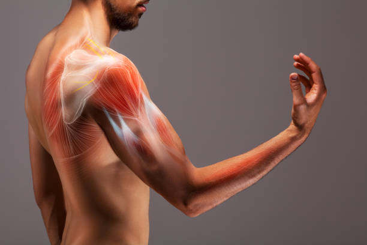

Asthama problem
Exercise-induced asthma is a narrowing of the airways in the lungs triggered by strenuous exercise. It causes shortness of breath, wheezing, coughing, and other symptoms during or after exercise.
The preferred term for this condition is exercise-induced bronchoconstriction (brong-koh-kun-STRIK-shun). This term is more accurate because the exercise induces narrowing of airways (bronchoconstriction) but isn't a root cause of asthma. Among people with asthma, exercise is likely just one of several factors that can trigger breathing difficulties.
Most people with exercise-induced bronchoconstriction can continue to exercise and remain active by treating the symptoms with asthma medications and taking preventive measures.
Symptoms
Signs and symptoms of exercise-induced bronchoconstriction usually begin during or soon after exercise. These symptoms can last for 60 minutes or longer if untreated. The signs and symptoms can include:
Coughing
Wheezing
Shortness of breath
Chest tightness or pain
Fatigue during exercise
Poorer than expected athletic performance
Avoidance of activity (a sign primarily among young children)
When to see a doctor
See your doctor if you have signs or symptoms of exercise-induced bronchoconstriction. A number of conditions can cause similar symptoms, making it important to get a prompt and accurate diagnosis.

Get emergency medical treatment if you have:
Shortness of breath or wheezing that is quickly increasing, making it a struggle to breathe
No improvement even after using a prescription inhaler for asthma attacks
Causes
It's not clear what causes exercise-induced bronchoconstriction. There may be more than one biological process involved. People with exercise-induced bronchoconstriction have inflammation and might produce excess mucus after hard exercise.
Risk factors
Exercise-induced bronchoconstriction is more likely to occur in:
People with asthma. About 90% of people with asthma have exercise-induced bronchoconstriction. However, the condition can occur in people without asthma too.
Elite athletes. Although anyone can have exercise-induced bronchoconstriction, it's more common in high-level athletes.
Factors that can increase the risk of the condition or act as triggers include:
Cold air
Dry air
Air pollution
Chlorine in swimming pools
Chemicals from ice cleaning equipment
Activities with extended periods of deep breathing, such as long-distance running, swimming or soccer
Complications
If not treated, exercise-induced bronchoconstriction can result in:
Serious or life-threatening breathing difficulties, particularly among people with poorly managed asthma
Lower quality of life because of inability to exercise